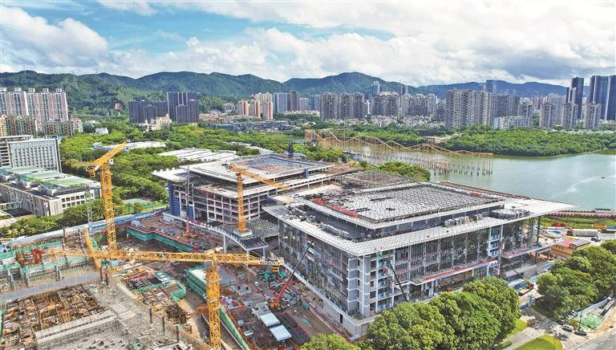

深圳国际交流中心 / Shenzhen International Communication Center
不完整原因：用户输入“香蜜湖国际中心”在公开资料中不是稳定的官方项目名；本案例按高可信匹配对象“深圳国际交流中心”整理。资料以政府、国资与地方媒体为主，未检索到 gooood、ArchDaily、有方等专业建筑媒体的完整建筑案例页；项目事实较可靠，但建筑师、总平面、剖面、幕墙节点和建成后体验仍需人工复核。
01 基本信息与经济技术指标
| 项目 | 内容 |
|---|---|
| 项目名称 | 深圳国际交流中心 |
| 英文名称 | Shenzhen International Communication Center / Shenzhen International Exchange Center |
| 建筑师 / 事务所 | 公开资料未确认总建筑师或建筑设计单位；何镜堂、何昉等出现在“岭南庭院”景观设计咨询专家评审会专家名单中，不等同于建筑主创 |
| 地点 | 中国广东省深圳市福田区香蜜湖北区 / 香蜜湖西岸 |
| 建筑类型 | 国际会议与交流中心，含会议中心、配套酒店、花园会议区等 |
| 年份 / 状态 | 2019 年项目公司成立；2023-03-21 一期会议中心钢结构首吊；2024-07 政府报道称项目雏形已现；一期会议中心预计 2025 年中建成，配套酒店预计 2026 年底建成 |
| 总建筑面积 | 项目总建筑面积 40 余万平方米；一期会议中心总建筑面积 21.6 万平方米 |
| 结构体系 | 一期会议中心采用钢管混凝土柱 - 钢梁框架 - 钢筋混凝土剪力墙结构体系；最大跨度 68.4m，最大悬挑 18m |
| 主要材料 / 建造 | 公开资料重点披露钢结构，会议中心用钢量约 3.5 万吨，吊装约 1.5 万次；幕墙、室内与节点材料未检索到可靠完整资料 |
| 业主 / 开发建设 | 深圳香蜜湖国际交流中心发展有限公司，深圳市投资控股有限公司全资子公司 |
| 信息可信度 | 项目身份、区位、规模、功能、结构施工和进度较可靠；建筑设计单位、图纸、空间细节与建成体验证据不足 |

02 资料质量与证据密度
- 资料状态：insufficient
- 是否有一级资料：是
- 一级资料是否用于身份确认：是
- 建筑专业媒体数量：0
- 微信有效结果数量：2
- 知乎有效结果数量：0
- 已覆盖分析项：concept / context / program / structure_construction / urban_relationship / user_experience
- 资料最充分的方向：项目定位、建设主体、功能构成、阶段进度、一期会议中心结构与施工组织。
- 资料明显不足的方向：总建筑师、建筑设计单位、总平面、流线分区、立面材料、幕墙节点、室内空间、建成后运营体验。
- 需要人工复核：是否存在官方设计竞赛结果、建筑设计中标公告、完整图纸包或主创建筑师访谈。
03 一句话判断
深圳国际交流中心最值得学习的不是单一造型，而是怎样把“城市会客厅”的外交、会议、酒店、花园与运营需求，转译为一个大跨度会议综合体：城市定位先行，功能复合支撑活动生命周期，岭南庭院承担地域气候与礼仪体验，钢结构与数字建造则支撑高强度公共事件空间。
04 场地信息表
| 场地维度 | 与设计回应相关的信息 | 证据 |
|---|---|---|
| 场地区位 | 位于深圳福田香蜜湖北区 / 香蜜湖西岸，是香蜜湖片区重大公共项目之一 | 深圳国资委招聘公告、深圳政府在线图片新闻 |
| 城市角色 | 定位为深圳“城市会客厅”“城市名片”，服务高级别主场外交峰会、国际会议和大型企业活动 | 深圳国资委、深圳政府在线 |
| 周边关系 | 2024 年政府图片新闻将其与深圳金融文化中心并列描述，显示片区同时承担国际交流与金融文化展示功能 | 深圳政府在线 |
| 服务人群 | 国家与城市外事活动、国际会议参会者、大型企业活动、精品展览、餐饮住宿与休闲使用者 | 深圳国资委招聘公告 |
| 核心矛盾 | 项目需要同时满足高规格礼仪、安全运营、大规模集散、酒店配套、花园会议和城市开放形象 | 基于已检索资料归纳 |
05 概念创意探索
5.1 诊断 Diagnosis
- 来源明确：项目是深圳市重大项目，需服务元首峰会、国际会议、大型企业商业活动、精品展览、餐饮、住宿和休闲等多类型场景。
- 基于资料的归纳判断：会议中心不是孤立会场，而是高规格事件的城市级基础设施；建筑策略必须同时处理礼仪、集散、复合运营和城市形象。
5.2 定位 Positioning
- 来源明确：官方文件提出“世界眼光、国际标准、中国特色、高点定位”，目标是建设国际一流、多功能的国际交流中心和深圳“城市会客厅”。
- 补充来源：地方报道将“岭南庭院”景观设计总结为“世界眼光、中国气派、岭南风格、深圳特色”。
- 基于资料的归纳判断：项目定位在两个尺度间摆动：对外是国际会议与城市外交窗口，对内是香蜜湖片区公共形象和产业展示节点。
5.3 策略 Strategy
- 策略：以“国际会议中心 + 配套酒店 + 花园会议区”的复合功能组织活动全流程。
- 回应的问题：高级别会议需要会前接待、会中会议、会后餐饮住宿、展览发布与休闲交流的连续支撑。
- 对空间 / 形式 / 建造的影响：大跨度会议空间形成结构核心；酒店与花园会议区形成配套层；“岭南庭院”作为室内外过渡和地域表达界面。
- 证据来源：深圳国资委、深圳政府在线、深圳新闻网。
5.4 意象与表达 Imagery, Naming & Expression
公开资料可确认的关键词包括“城市会客厅”“城市名片”“岭南庭院”“山水交融”“内外渗透”“移步换景”和“360 度可看可游的景观中庭”。这些词说明项目的表达并不只追求会议中心的纪念性，也希望通过庭院、景观与气候回应形成具有深圳与岭南识别度的公共体验。
06 建筑语言生成 Architectural Language Generation
6.1 功能梳理 Function
项目功能由国际会议中心、配套酒店、花园会议区等构成，并服务元首峰会、国际会议、大型企业活动、精品展览、餐饮、住宿和休闲。对会议综合体而言，这意味着功能不应只按房间类型排列，而应围绕“抵达 - 接待 - 会议 - 展示 - 餐饮 - 住宿 - 休闲交流”的事件链条组织。
6.2 布局逻辑 Layout
目前未检索到可靠总平面和流线图，不能判断入口、安检、贵宾流线、后勤流线与酒店动线的具体关系。可确认的是项目分两期建设，一期包括会议中心和配套酒店；会议中心作为先行核心，酒店在后续阶段补全长周期会议活动的住宿与配套能力。
6.3 形式构成 Composition
官方资料没有发布可复核的建筑形体生成过程。结合项目定位，可谨慎归纳为：会议中心需要以大体量、大跨度、强礼仪性的公共空间作为主体，同时通过庭院、景观和酒店配套削弱单一巨构带来的封闭感。此判断属于综合推断，需等待建筑专业资料复核。
6.4 场所与氛围 Place & Atmosphere
“岭南庭院”是目前最明确的空间气氛线索。专家评审报道强调山水交融、岭南园林包容多元、内外渗透、因地制宜、移步换景、高低错落，以及与建筑和室内的采光、视线、尺度关系整合。它提示项目希望把会议中心的庄重性转化为可游、可看、有气候缓冲的庭院经验。
07 建造品质控制 Construction Quality Control
7.1 建造语言 Construction Language
- 骨架：一期会议中心采用钢管混凝土柱 - 钢梁框架 - 钢筋混凝土剪力墙结构体系，最大跨度 68.4m，最大悬挑 18m。
- 围合：未检索到可靠幕墙、屋面和围护系统资料。
- 地台：未检索到可靠基础、平台和地下空间资料。
7.2 材料与工艺 Materials & Craft
公开资料重点披露钢结构施工组织。会议中心钢结构用钢量约 3.5 万吨，吊装约 1.5 万次，说明它的建造难点集中在大跨度构件、复杂节点、吊装顺序和施工现场协同控制。
7.3 构造逻辑 Tectonic Logic
大跨度会议空间通常需要用结构建立无柱或少柱的集会空间。此项目可确认的“钢管混凝土柱 + 钢梁框架 + 剪力墙”组合，显示其在抗侧力、跨度、悬挑和公共大厅空间之间寻找平衡；但具体柱网、节点、屋盖构造仍缺少公开图纸。
7.4 物理性能与施工控制 Performance & Construction Control
项目使用基于 BIM 的钢结构物资跟踪，为构件建立“身份证”，对设计、加工、运输、安装全过程可视化管控，并结合 BIM、5G、物联网、云计算等技术组织智慧建造。这个信息对案例学习很关键：大型会议中心的品质控制不只在造型和材料，也在构件级物流、吊装精度和跨团队信息协同。
08 核心方法提炼
方法 1：先定义城市角色，再组织建筑功能
- 面对的问题：会议中心容易变成孤立的大体量公共建筑，难以承担城市对外展示与日常运营双重角色。
- 具体做法：以“城市会客厅 / 城市名片”为定位，将外交峰会、国际会议、企业活动、展览、餐饮、住宿、休闲纳入同一运营框架。
- 建筑效果：建筑不只是会场，而是城市级接待、展示和产业交流平台。
- 证据来源：深圳国资委、深圳政府在线。
- 可迁移方法：做大型公共建筑时，先写清“城市角色 + 活动链条”，再推导功能面积、动线等级和配套需求。
方法 2：用复合配套支撑高规格事件生命周期
- 面对的问题：高级别会议的空间需求跨越会议、接待、住宿、餐饮、展览和非正式交流。
- 具体做法：把国际会议中心、配套酒店、花园会议区组合为一体，并分期推进。
- 建筑效果：会议活动从短时集会变为可持续运营的城市综合服务系统。
- 证据来源：深圳国资委、深圳政府在线。
- 可迁移方法：会议类建筑的分析图可从“事件生命周期”切入，而不只画功能泡泡图。
方法 3：把地域表达落实到庭院与气候体验
- 面对的问题：国际会议中心需要庄重形象，但过度纪念性会削弱使用体验和地方感。
- 具体做法：以“岭南庭院”为景观与空间线索，强调山水、渗透、移步换景、尺度整合和可游览的景观中庭。
- 建筑效果：庭院成为礼仪空间、气候缓冲、视线组织和地域文化表达的共同媒介。
- 证据来源：深圳新闻网 / 深圳晚报报道。
- 可迁移方法：地域性不必停留在立面符号，可以进入中庭、廊道、微气候、视线和行走体验。
方法 4：用结构与数字建造兑现大跨度公共空间
- 面对的问题：会议中心的大空间、悬挑和复杂吊装对结构与施工组织要求高。
- 具体做法：采用钢管混凝土柱、钢梁框架、钢筋混凝土剪力墙组合，并用 BIM 构件身份、5G、物联网和云计算进行全过程可视化管控。
- 建筑效果：结构体系和数字施工共同支撑高标准公共事件空间。
- 证据来源：深圳政府在线。
- 可迁移方法：分析大跨度公共建筑时，应把结构跨度、吊装、构件追踪和施工组织纳入设计方法，而不只讨论效果图。
09 图纸与图片索引
| 图片类型 | 推荐用途 | 正文嵌入状态 / 本地图片 / 来源页面 | 来源 | 下载状态 | 图文相关性 | 版权 / 备注 |
|---|---|---|---|---|---|---|
| 01_hero | 施工状态 / 城市片区关系 | 已在正文嵌入：images/01_project_site_2024.jpg / 来源 | 深圳政府在线 | downloaded | 用于说明项目在香蜜湖片区的建设状态和与金融文化中心并行成形的城市背景 | 政府公开页面图片，仅作学习研究引用 |
| 03_plan | 总平面 / 功能组织 | 未检索到可下载可靠图纸 | - | skipped | 需后续人工补充 | 缺少专业建筑媒体或官方图纸 |
| 04_section | 剖面 / 大跨度空间 | 未检索到可下载可靠图纸 | - | skipped | 需后续人工补充 | 缺少专业建筑媒体或官方图纸 |
10 对我的设计启发
- 可迁移方法 1：会议中心的概念不应只来自形象口号，而应来自城市角色和活动链条。
- 可迁移方法 2：把“会议 + 酒店 + 花园 + 展示 + 餐饮”作为一个运营剖面来分析，比单纯画平面分区更有效。
- 可迁移方法 3：岭南地域性可以通过庭院、渗透、气候缓冲和移步换景进入空间，而不是只贴在立面上。
- 可迁移方法 4：大跨度公共建筑的建造组织是设计质量的一部分，应把 BIM 构件追踪、吊装和结构跨度纳入案例图解。
- 不适合直接照搬的部分：城市会客厅、高规格外交会议、超大面积会议中心等条件高度依赖城市等级、财政与运营主体，不适合直接套用于普通社区或校园建筑。
- 可转化成的分析图：城市角色图、事件生命周期图、会议中心 + 酒店 + 花园功能复合图、岭南庭院体验图、大跨度结构与数字建造流程图。
11 信息缺口与冲突
- 项目名称：公开可靠来源主要使用“深圳国际交流中心”；“香蜜湖国际中心”可能是简称、误称或片区化说法。
- 建筑师：公开资料未确认总建筑师或建筑设计单位。何镜堂、何昉等被报道为“岭南庭院”景观设计咨询专家评审会专家，不能据此写成建筑主创。
- 专业媒体：未检索到 gooood、ArchDaily、有方等专业建筑案例页，建筑语言分析需要后续图纸和主创资料复核。
- 图纸与材料：总平面、剖面、立面、幕墙、室内、节点与建成摄影资料缺口明显。
12 来源列表
Level A：官方与一手来源
Level B：高质量建筑媒体
- 未检索到可靠完整案例页。
Level C：中文补充源
Level D：检索记录
- Sogou 知乎检索未保留到对目标建筑有实质分析价值的结果。
来源
- 深圳香蜜湖国际交流中心发展有限公司公开招聘公告level_a深圳市人民政府国有资产监督管理委员会
- 深圳国际交流中心项目钢结构首吊成功level_a深圳政府在线 / 深圳市国资委
- 深圳国际交流中心雏形已现level_a深圳政府在线 / 深圳特区报
- 香蜜湖畔崛起世界一流的城市会客厅 深圳国际交流中心高标准打造“岭南庭院”level_c深圳新闻网 / 深圳晚报
- Sogou 微信结果：深圳国际交流中心 岭南庭院level_cSogou 微信搜索可见摘要